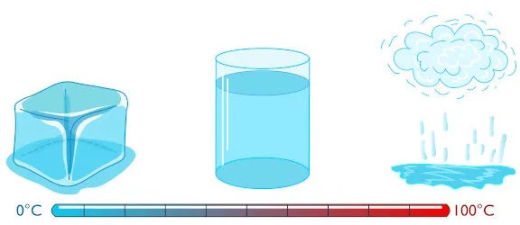

    <main>
        <section class="experimento">
            
            <div class="texto-sobre-imagem">
                <h2>Experimento de Calorimetria</h2>
                <p>A calorimetria é o ramo da física que estuda a transferência de calor entre corpos e sistemas. Na imagem, podemos ver um exemplo de um experimento de calorimetria, onde a transferência de calor está sendo medida e analisada.</p>
            </div>
        </section>
    </main>